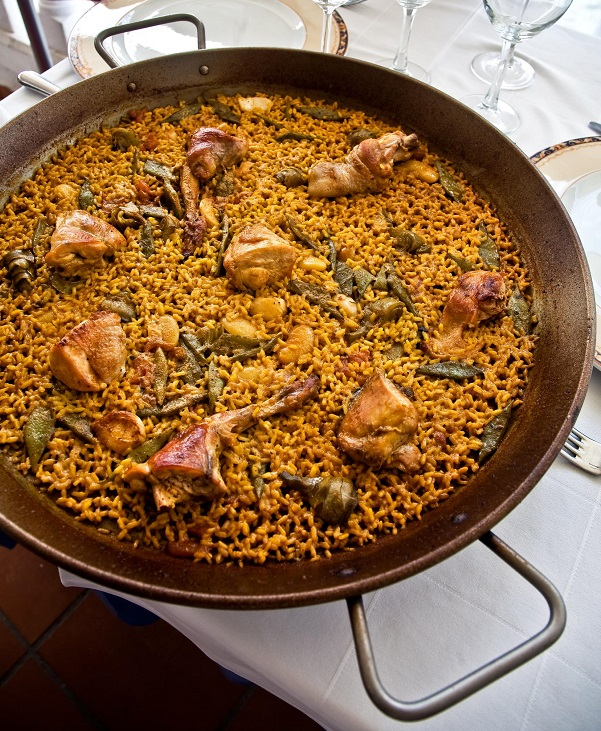

Paella Valenciana
Ingredientes
- 400 g de arroz
- 500 g de pollo troceado
- 300 g de conejo troceado
- 200 g de judía verde
- 100 g de garrofón (o judión)
- 2 tomates rallados
- 1 cucharadita de pimentón dulce
- Unas hebras de azafrán o colorante alimentario
- Aceite de oliva, sal y agua

Pasos de elaboración
- Calienta aceite en la paellera y sofríe el pollo y el conejo hasta dorar.
- Añade la judía verde y el garrofón y rehoga unos minutos.
- Incorpora el tomate rallado y el pimentón, removiendo para evitar que se queme.
- Añade agua hasta cubrir y cuece unos 30 minutos a fuego medio.
- Agrega el arroz repartido de manera uniforme.
- Disuelve el azafrán en un poco de agua y añádelo.
- Cocina a fuego alto 10 min y luego baja a medio 10 min más.
- Deja reposar unos 5 minutos antes de servir.
Descargar receta en PDF
Volver al menú principal